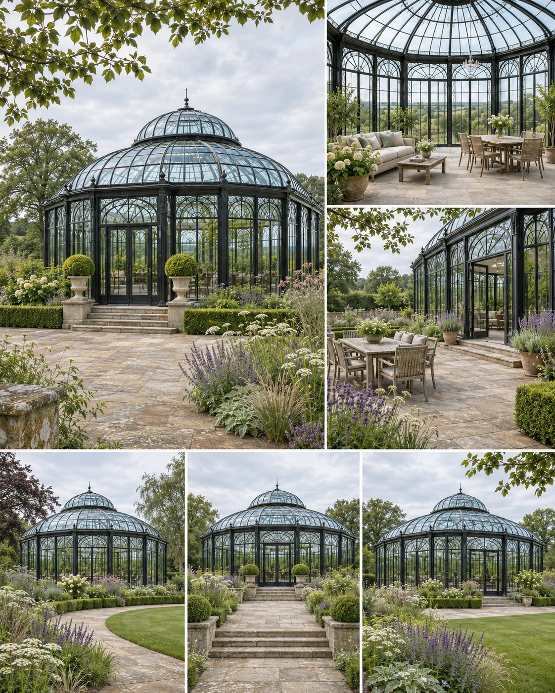
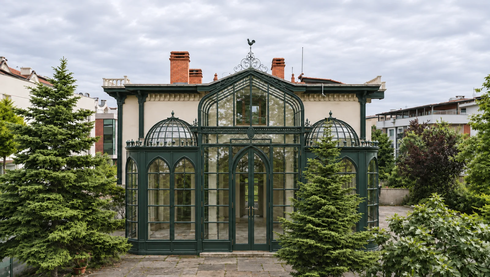

Domed conservatory · Completion study
The Twin Dome Conservatory
The project
The Twin Dome Conservatory
The Twin Dome Conservatory sets two domed glazed bays either side of a tall, pointed central entrance. Seen from the garden, the domes frame the doorway and give the building a symmetrical, almost chapel-like front.
The main image is a completion study: the glazing has been shown following the steel frame recorded in an installation photograph, so you can see how the finished conservatory reads against the house.
- Location
- Istanbul, Türkiye — private villa
- Year
- 2025
- Structure
- Conservatory with two domed side bays and a central entrance
- Frame
- Slender ornamental steelwork
- Roof
- Glazed domes to the side bays; pointed entrance gable
- Stage
- Completion study based on an installation photograph
- Made by
- Steelwork fabricated and installed by our partner ironwork atelier in Türkiye
Frame and roof
Curved steel ribs form each dome, rising from the bay below to a central point. The entrance between them is drawn up into a pointed gable, with fine metal details at the doors and upper panes.
On the conservatories page you can see this frame during installation, supported by scaffolding before glazing — a clear view of how a steel conservatory takes shape.
Proposed completion based on an installation photograph.
Design and build
Installation to completion
The installation film was shot at the villa itself: the pre-made arched frames are raised against the house front, the dome cages are craned onto the side bays, and the cresting and finials are welded and finished in place before painting. An aerial pass shows how the structure sits on the roof terrace of the house. We show the installation alongside the completion study so the difference stays clear: the frame is real; the finished glazing is proposed.
Similar designs

Develop your project
FROM A REFERENCE.
TO YOUR OWN SPACE.
See the installation views on our steel and glass conservatories page, compare the Domed Botanical Glasshouses design, or explore classical conservatories.
Share the setting and the direction you are drawn to, and we will discuss your garden project.
Your next space
LET’S BEGIN
WITH YOUR IDEAS.
Share the setting, the way you want to use the space and the designs you are drawn to.
Plan your project